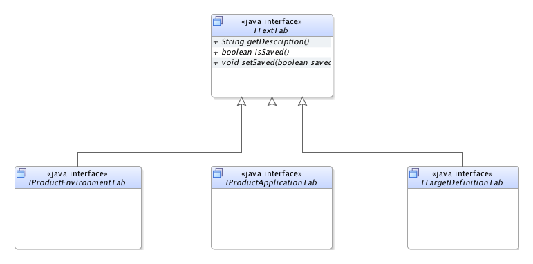

public interface ITextTab extends ITab
ITab defining a standard structure of editing a big texts.
A requirement analysis contains many descriptions which has to be editable. To give such tasks a standard structure all subclasses of this interface are unified on the following points.
View actions in view
A text tab provides two different view actions:
ViewActions.SAVE - saves the written text in the analysisViewActions.RESET - resets the current text to the saved text in the
analysis
Text field
In addition to the view actions the view provides a big text field in which the user can enter his text. To
observe the text changes a ITextController could be added via
addTextController(ITextController). It will be notified whenever the text is changed by the
user in this view.
The current implementations of this interface are shown below to give a better overview of the tab structure:

ITab| Modifier and Type | Method and Description |
|---|---|
void |
addTextController(ITextController textfieldController)
Adds a
ITextController to the text field to observe the changes of text. |
java.lang.String |
getDescription()
Returns the entered string/description of the user.
|
void |
resetDescription()
Sets the content of the text area to the saved description and deletes changes which the user could have done.
|
getTabNameaddController, bringToFront, destruct, getViewMenu, showViewjava.lang.String getDescription()
void resetDescription()
void addTextController(ITextController textfieldController)
ITextController to the text field to observe the changes of text. It will be notified whenever
the text is changed by the user in this view.textfieldController - Controller which should be notified